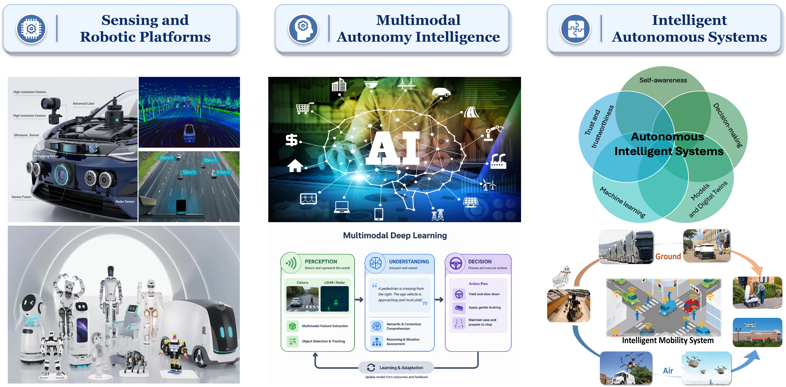

We work on research topics including, but not limited to:
Multimodal sensing, data processing, and sensor fusion
Deep learning-based perception for scene understanding
Edge AI and hardware-aware AI deployment
Robotics, embodied intelligence, and physical AI
Multimodal foundation models and agentic AI
World models and spatial intelligence for closed-loop autonomy
Reliable, trustworthy, and safety-aware AI for autonomous systems
Application-driven AI for real-world sensing and autonomy
Sensor FusionDeep PerceptionRoboticsPhysical AIMultimodal AIAgentic AIWorld ModelsApplied AIAutonomous Systems

These topics point to a fundamental challenge in Physical AI: autonomous systems must make decisions based on an incomplete and evolving understanding of the physical world. Perception alone cannot provide a complete account of the environment; reasoning must interpret sensory evidence within its physical and temporal context, while decision-making must account for both the inferred understanding and what remains uncertain. Uncertainty in perception shapes what a system can infer, which future states it should anticipate, and what actions it can take. This relationship also works in reverse: the actions a system intends to take influence what it needs to observe and understand. Reliable autonomy therefore requires more than advancing perception, reasoning, and control separately; it requires understanding how these capabilities inform and constrain one another.
We pursue this challenge through three closely related research directions: multimodal perception and sensor fusion, multimodal AI for autonomous systems, and intelligent prediction, control, and planning.
Multimodal Perception and Sensor Fusion
We develop reliable multimodal perception methods that transform heterogeneous sensor data into robust situational awareness. This direction integrates Camera, Radar, LiDAR, GNSS, and other sensing modalities through calibration, spatial alignment, temporal synchronization, uncertainty modeling, adaptive fusion, and deep representation learning.
Beyond improving accuracy on standard benchmarks, our goal is to create perception systems that understand their own reliability, detect degradation, and remain functional under occlusion, adverse weather, sensor faults, domain shift, and real-time deployment constraints.
Recent articles on this topic:
Lei Cheng, Lihao Guo, Tianya Zhang, Tam Bang, Austin Harris, Mustafa Hajij, Mina Sartipi, and Siyang Cao. “CalibRefine: Deep Learning-Based Online Automatic Targetless LiDAR–Camera Calibration with Iterative and Attention-Driven Post-Refinement.” IEEE Transactions on Instrumentation and Measurement, 2025.
arXiv
Lei Cheng and Siyang Cao. “Radar-Camera Fused Multi-Object Tracking: Online Calibration and Common Feature.” IEEE Transactions on Intelligent Transportation Systems, 2025.
arXiv
Lei Cheng, Arindam Sengupta, and Siyang Cao. “Deep Learning-Based Robust Multi-Object Tracking via Fusion of mmWave Radar and Camera Sensors.” IEEE Transactions on Intelligent Transportation Systems, 2024.
arXiv
Arindam Sengupta, Lei Cheng (co-first author), and Siyang Cao. “Robust multiobject tracking using mmWave radar-camera sensor fusion.” IEEE Sensors Letters, 2022.
IEEE
Lei Cheng, Arindam Sengupta, and Siyang Cao. “3D Radar and Camera Co-Calibration: A Flexible and Accurate Method for Target-based Extrinsic Calibration.” IEEE Radar Conference (RadarConf23), 2023.
arXiv
Lei Cheng and Siyang Cao. “Online Targetless Radar-Camera Extrinsic Calibration Based on the Common Features of Radar and Camera.” IEEE National Aerospace and Electronics Conference (NAECON), 2023.
arXiv
Multimodal AI for Autonomous Systems
We explore how multimodal AI foundation models can enable a new generation of autonomous systems that are more generalizable, context-aware, and adaptive. This direction studies how vision, geometry, motion, language, and semantics can be unified into physically grounded representations that connect low-level sensing with high-level reasoning.
Rather than treating foundation models as black-box predictors, we aim to constrain them with sensor evidence, scene geometry, temporal dynamics, uncertainty estimation, and physical plausibility. The long-term vision is foundation-model-enabled autonomy for open-world perception, semantic reasoning, human–system communication, and safe decision support.
Recent articles on this topic:
Lei Cheng and Siyang Cao. “Heterogeneous Sensor Fusion for Environmental Perception in Autonomous Systems: Principles, Frameworks, and Emerging Trends.” IEEE Transactions on Intelligent Transportation Systems, 2026. (Under Review)
Dianwei Chen, Zifan Zhang, Lei Cheng, Yuchen Liu, and Xianfeng Yang. “INSIGHT: Enhancing Autonomous Driving Safety through Vision-Language Models on Context-Aware Hazard Detection and Edge Case Evaluation.” IEEE Intelligent Vehicles Symposium (IV), 2026.
arXiv
Lei Cheng and Siyang Cao. “TransRAD: Retentive Vision Transformer for Enhanced Radar Object Detection.” IEEE Transactions on Radar Systems, 2025.
arXiv
Intelligent Autonomous Systems: Prediction, Control, and Planning
Reliable perception matters only when it leads to better decisions. We study how perception, uncertainty, and scene understanding can be translated into risk-aware prediction, control, and planning for intelligent autonomous systems.
In transportation and autonomous driving, this includes predictive safety systems, variable speed limits, advanced safety warnings, uncertainty-aware motion prediction, and planning under occlusion, poor visibility, and rare events. In robotics and related settings, it includes anomaly-aware monitoring, intent inference, and adaptive operation in human-centered environments.
Recent articles on this topic:
Tianya Zhang, Lei Cheng, Tam Bang, Lihao Guo, Mustafa Hajij, Siyang Cao, Austin Harris, and Mina Sartipi. “Roadside Sensor Systems for Vulnerable Road User Protection: A Review of Methods and Applications.” IEEE Access, 2025.
IEEE
Zihan Ma, Sung Yoon Park, Gang-Len Chang, and Lei Cheng. “Design and Field Demonstration of a Real-Time UAS-Based System for Speed Management and Advanced Work Zone Safety Alerts.” Transportation Research Board (TRB) Annual Meeting, 2027.
Tam Bang, Hoang H. Nguyen, Lei Cheng, Lihao Guo, Siyang Cao, Hussam Abubakr, Tianya Zhang, Austin Harris, and Mina Sartipi. “CLIFE: Camera-LiDAR Fusion Framework for Edge-Deployable Roadside VRU Perception.” IEEE 29th International Conference on Intelligent Transportation Systems (ITSC), 2026.
arXiv
Tam Bang, Hoang H. Nguyen, Deponker Sarker Depto, Lei Cheng, Lihao Guo, Siyang Cao, Tianya Zhang, Austin Harris, and Mina Sartipi. “Real-Time Edge-Based Multi-Sensor Fusion for Vulnerable Road User Safety at Urban Intersections.” Transportation Research Board (TRB) Annual Meeting, 2025.